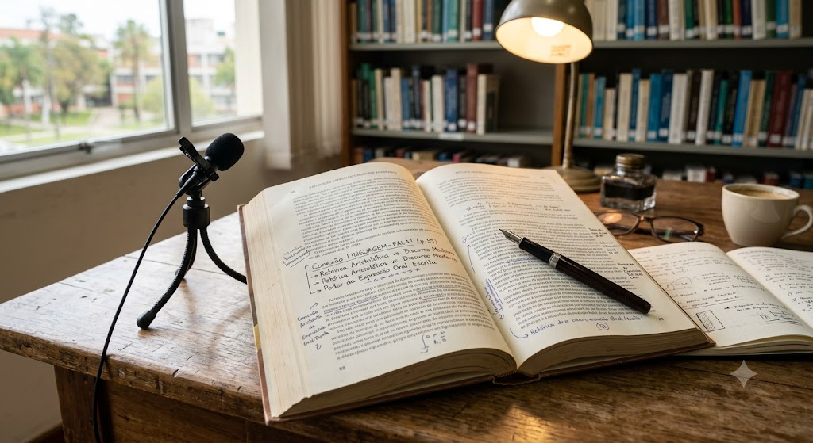

01 · Disposições da Vida Acadêmica
Aproveitar a universidade exige mais do que cumprir tarefas
Esta unidade começa com uma pergunta prática: o que faz alguém realmente aproveitar a vida acadêmica? A resposta não cabe em uma lista rígida de regras, porque ensino, pesquisa e extensão mudam conforme a área, a instituição e as pessoas envolvidas. O que existe são disposições: modos de agir que aumentam a chance de transformar o curso em formação, e não apenas em diploma.
Pensamento independente, interesse genuíno pela área, debate crítico, escrita cuidadosa e padrões éticos elevados aparecem como atitudes desejáveis. O ponto mais importante, para mim, é que nenhuma delas nasce pronta. Elas são desenvolvidas na prática, pelo contato com professores, textos, projetos, erros e revisões. A vida acadêmica cobra método, mas também cobra envolvimento.
Disposição acadêmica
Não é talento fixo nem simples força de vontade. É uma inclinação cultivada para agir melhor dentro da universidade: perguntar com seriedade, testar convicções, aceitar crítica, escrever para pensar e usar o conhecimento com responsabilidade.
O trecho que mais me chamou atenção foi a ideia de fazer "engenharia reversa" das boas práticas. Em vez de imitar alguém de forma automática, posso observar o que funciona: como uma pessoa organiza ideias, como argumenta, como reage a evidências contrárias. Isso torna o aprendizado menos passivo. A universidade deixa de ser só um lugar onde recebo conteúdo e passa a ser um laboratório para ajustar meu próprio modo de pensar.
02 · Percepção, Argumentação e Proposição
Planejar sem engessar: escolher também é renunciar
A unidade trata o planejamento acadêmico como parte do projeto de vida. Planejar não significa controlar tudo, porque interesses mudam, dificuldades aparecem e novas oportunidades surgem. Ainda assim, não planejar tem custo. Quando deixo tudo em aberto, posso até sentir liberdade por um tempo, mas cedo ou tarde qualquer caminho sério vai exigir escolha, renúncia e responsabilidade.
A percepção da realidade entra justamente aí: entender onde estou, o que sei, o que falta desenvolver e quais consequências acompanham cada decisão. A argumentação organiza essas percepções em razões. A proposição transforma essas razões em plano: metas de curto, médio e longo prazo que podem ser revistas, mas não ignoradas.
Sem reflexão
- Mudo de rota só para escapar de uma dificuldade
- Confundo possibilidade com direção real
- Trato frustração como sinal de fracasso definitivo
- Deixo escolhas importantes nas mãos das circunstâncias
Com planejamento flexível
- Reavalio o plano quando surgem razões melhores
- Transformo possibilidades em etapas concretas
- Leio dificuldades como parte do percurso
- Assumo o custo das escolhas sem perder abertura
O exemplo da estudante de psicologia foi útil porque mostra que um plano pode ser bom e, mesmo assim, incompleto. Ela entra pensando no consultório, mas descobre pesquisa, formação interdisciplinar, políticas públicas e outras possibilidades. O objetivo inicial não precisa ser abandonado; ele pode ficar mais rico. Planejamento bom não é uma prisão. É uma bússola que aceita correções.
03 · Autoria e Perspectiva Inovadora
Ser autor é aceitar o peso de colocar algo no mundo
A universidade não é apenas um lugar de transmissão de conhecimento. Ela também é um espaço de produção, criação e iniciativa. Por isso, autoria não significa só assinar um texto; significa assumir responsabilidade por uma ideia, um projeto, uma proposta ou uma tentativa de inovação. Mesmo quem está começando pode protagonizar algo.
O conteúdo faz uma observação importante: inovação e empreendedorismo não pertencem apenas ao mundo empresarial. Na universidade, eles também aparecem em pesquisas, extensões, projetos sociais, soluções técnicas, relações com empresas e iniciativas que tentam responder a problemas reais. O difícil é lidar com a incerteza: muitos projetos não saem do papel, e isso não invalida automaticamente o valor da tentativa.
Autoria
Assumir uma ideia como minha exige responder por ela, revisá-la e aceitar que outras pessoas possam avaliá-la com critérios diferentes dos meus.
Criatividade
Não é só ter inspiração. É reorganizar experiências, conhecimentos e problemas até encontrar uma forma nova de agir sobre eles.
Inovação
Inovar é fazer a ideia encontrar uso, contexto e consequência. Uma descoberta pode nascer na universidade e ganhar sentido quando encontra a sociedade.
Risco
Todo projeto carrega expectativas. O equilíbrio está em reconhecer erros sem transformar cada resultado abaixo do esperado em sentença contra si mesmo.
"Projetos precisam ser reajustados antes de serem simplesmente descartados como fracassos."Reflexão a partir do conteúdo da Unidade IV
Para mim, essa parte conversa diretamente com Engenharia de Software. Criar um sistema, uma automação ou uma solução para alguém também envolve autoria: eu coloco uma decisão técnica no mundo e ela afeta pessoas. O desafio é não confundir sucesso com estereótipo. Um projeto pode não virar uma empresa milionária e ainda assim produzir aprendizado, impacto e maturidade profissional.
04 · Leitura, Escrita e Oralidade
Pensar bem também depende de se expressar bem
Leitura, escrita e oralidade atravessam toda a vida acadêmica. Pela leitura acessamos o conhecimento acumulado. Pela escrita organizamos o que estamos entendendo e pesquisando. Pela oralidade comunicamos ideias, defendemos argumentos e participamos do debate. Mesmo em áreas muito técnicas, essas três habilidades continuam presentes.
O texto insiste em uma questão que parece simples, mas é decisiva: clareza. Um assunto pode ser difícil por natureza, mas isso não autoriza uma expressão confusa por escolha. Escrever e falar bem, no ambiente acadêmico, não é enfeitar frases. É permitir que outras pessoas compreendam, questionem e contribuam.
Expressão acadêmica
A boa expressão acadêmica não elimina a complexidade do assunto. Ela organiza essa complexidade para que o leitor ou ouvinte consiga acompanhar o raciocínio, identificar as razões apresentadas e participar do debate com honestidade intelectual.

Minha síntese final é que essas habilidades não são acessórios da graduação. Elas são parte do próprio processo de pensar. Muitas vezes só descubro que uma ideia estava frágil quando tento escrevê-la. Só percebo uma lacuna quando alguém pergunta por minhas razões. E só amadureço intelectualmente quando aceito que comunicar bem é também uma forma de respeito com quem lê, escuta e debate comigo.